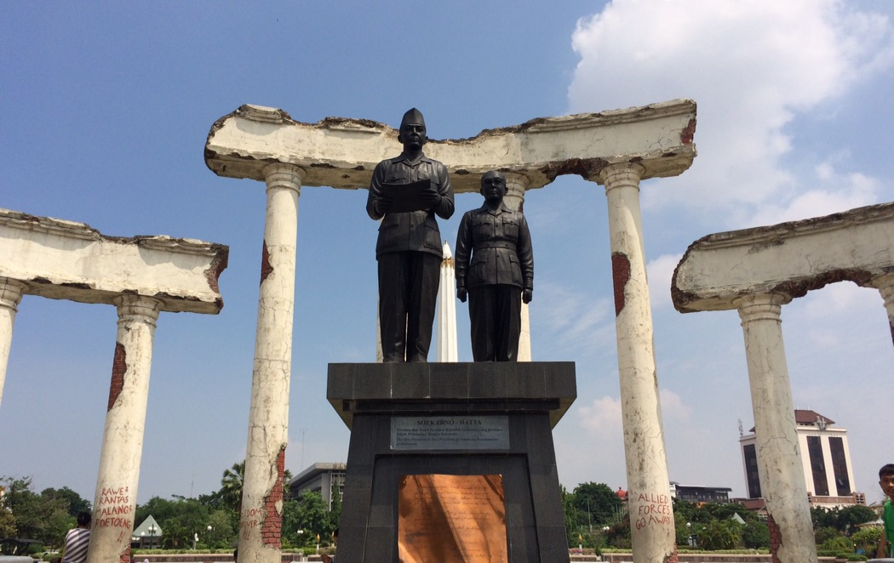

Surabaya Submarine Monument or as known as Monumen Kapal Selam (Monkasel) is the largest submarine monument in Asia, which was built in riverside of Kalimas, Surabaya. This monument was built by idea of Navy Veterans.
Mangrove
Mangrove
Wonorejo Surabaya
Wonorejo Mangrove ecotourism has the appeal of its natural beauty. Initially, this nature conservation area was created to prevent abrasion in the eastern area of Surabaya City. Good management makes the Surabaya City government open this location to the public.
Kenjeran Beach
Kenjeran Beach
Kenjeran
Kenjeran beach is located in Kenjeran district in the east top Surabaya, which is ± 9 km from Surabaya. Kenjeran beach has divided into two beaches; they are Old Kenjeran Beach and New Kenjeran Beach.

Museum 10 November
Museum 10 November
Bubutan
As the name suggests, Heroes Monument aims to commemorate the heroic battle between Surabaya and the allied forces on November 10, 1945. The 41.15-metre-high monument is designed to look like a reversed nail, showing Surabaya’s power to repel the invaders by putting a big inverted nail in the heart of the city.
Al-Akbar Mosque
Al-Akbar Mosque
Jambangan
Al Akbar National Mosque is the second largest mosque in Indonesia, located in the city of Surabaya, East Java after the Istiqlal Mosque in Jakarta. The position of this mosque is in the Pagesangan Village area, Jambangan District, Surabaya and right next to the Surabaya-Gempol Toll Road.